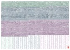

JLPT Level N3 Kanji List
The Level N3 kanji list is expected to be about 650 (or between 300-1000) This list is an educated guess which starts by taking all kanji from jouyou (japanese school) grades 1 to 4 and filter out those which are already in level's N4 and N5. This brings total kanji here to 361 (earlier levels total = 284 + 361 = 645)|
|

Kanji Poster

|